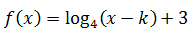
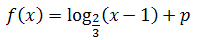
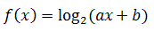
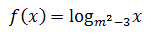
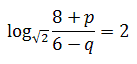

Różne zadania z funkcji logarytmicznej
Poniższe zadania są nieco trudniejsze i wykraczają
ponad poziom podstawowy.
Dana jest funkcja logarytmiczna o wzorze 
gdzie k jest parametrem. Dziedziną funkcji jest przedział (2, +?). Podaj wartość parametru
k, a następnie:
 Rozwiązanie PDF
Rozwiązanie PDF
- Oblicz wartość funkcji f dla argumentu 18.
- Oblicz argument dla którego wartość funkcji f wynosi 3,5.
- Określ dla jakich argumentów funkcja f przyjmuje wartości dodatnie.
Rozwiązanie PDF Dana jest funkcja logarytmiczna o wzorze 
gdzie p jest parametrem. Wartość funkcji f dla argumentu x = 3 wynosi 3. Oblicz
wartość parametru p, a następnie:
Rozwiązanie PDF
- Wyznacz argument dla którego wartość funkcji f wynosi 6.
- Wyznacz zbiór argumentów dla których funkcja f przyjmuje wartości mniejsze od 1.
Rozwiązanie PDF Wyznacz wartości parametrów a i b we wzorze funkcji 
jeśli wiadomo, że punkty A = (1, 3) oraz B = (4, 5) należą do wykresu funkcji f. Wyznacz
dziedzinę funkcji f.
Rozwiązanie PDF
Rozwiązanie PDF Funkcja \(f(x)\) dana jest poniższym wzorem:  Dla jakiego parametru \(m\) funkcja jest
malejąca?
Rozwiązanie PDF
Rozwiązanie PDF Wiadomo, że liczby p i q są dodatnie i q
< 6 oraz p + 2q = 4. Wykaż, że: 
Rozwiązanie PDF
Rozwiązanie PDF